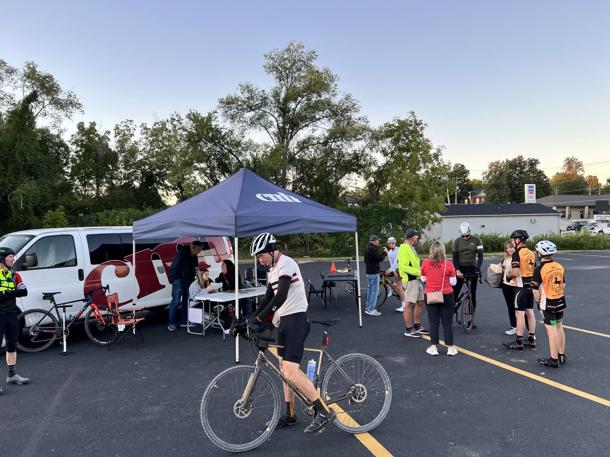
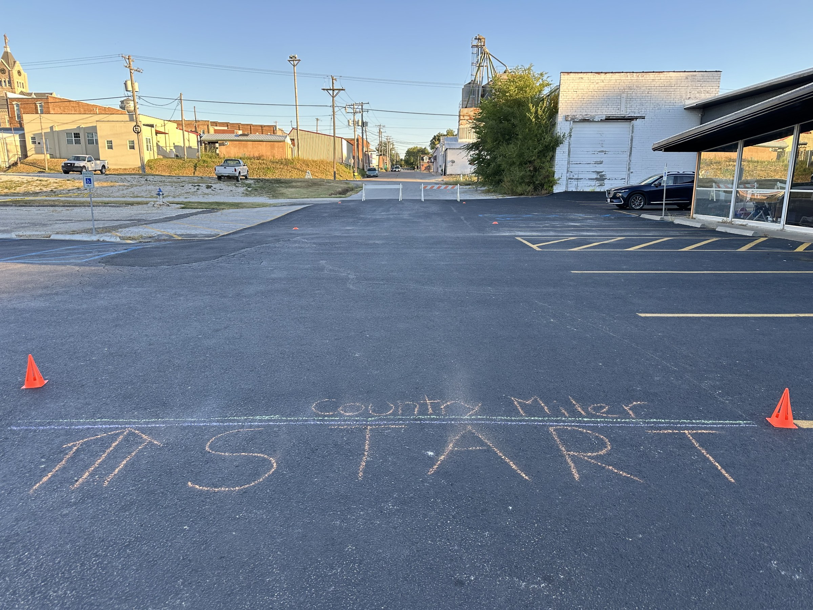
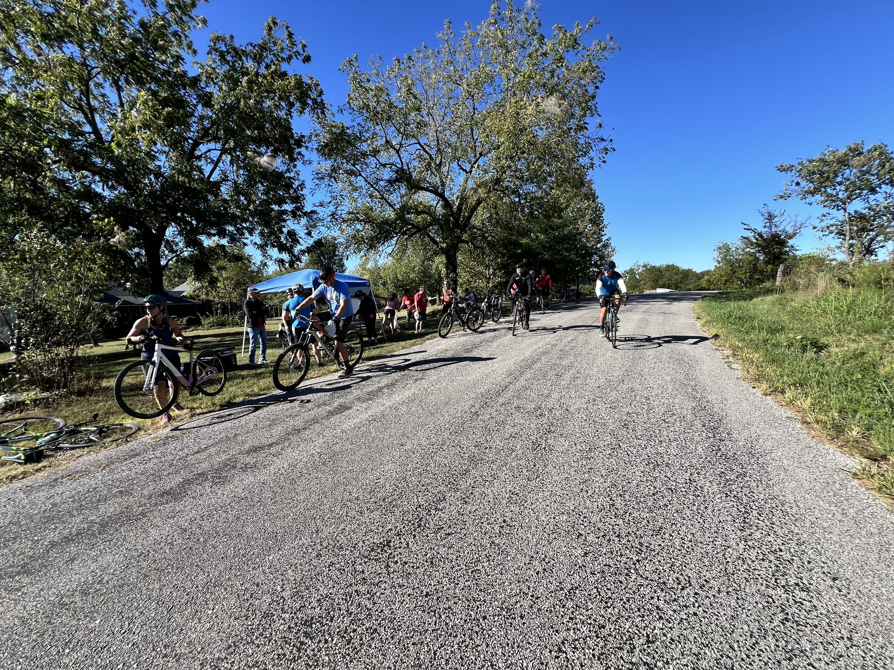
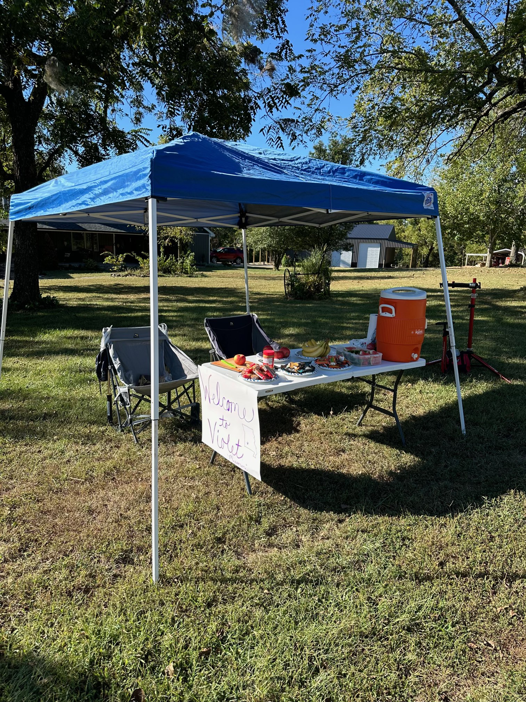
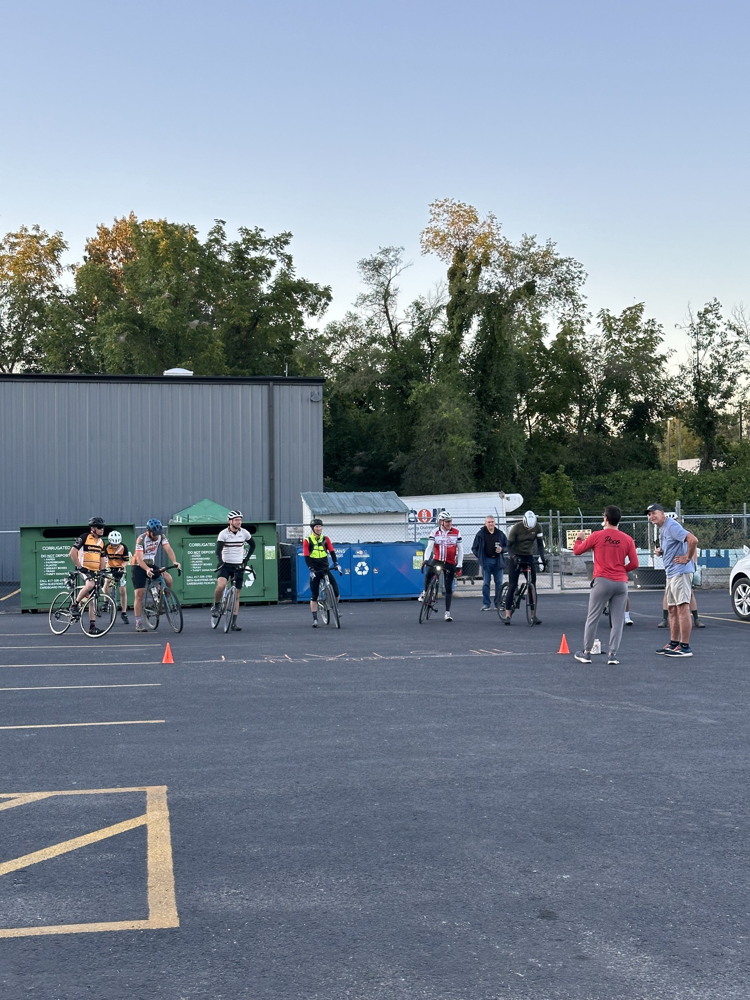
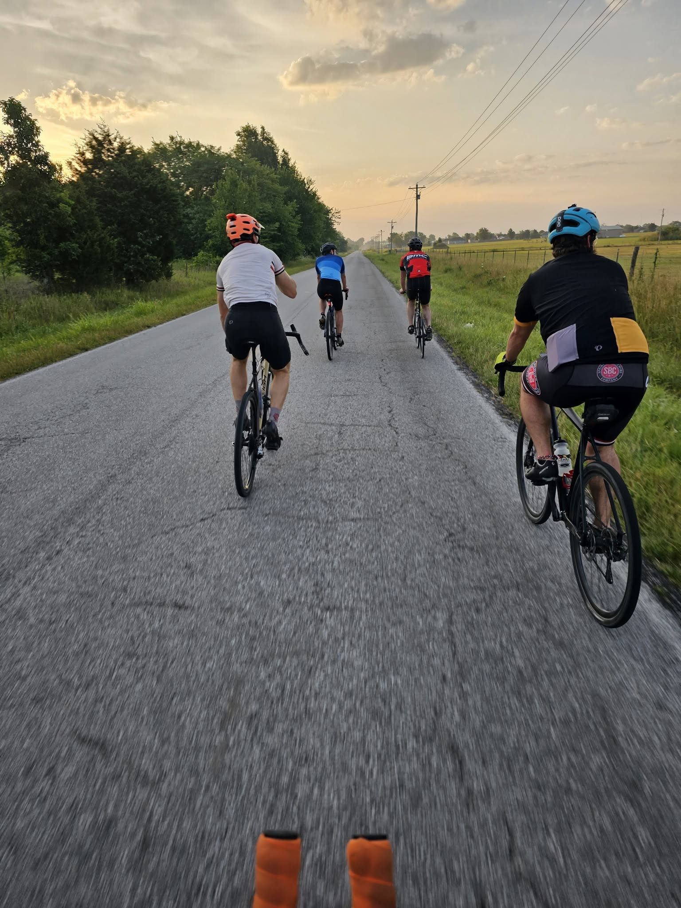
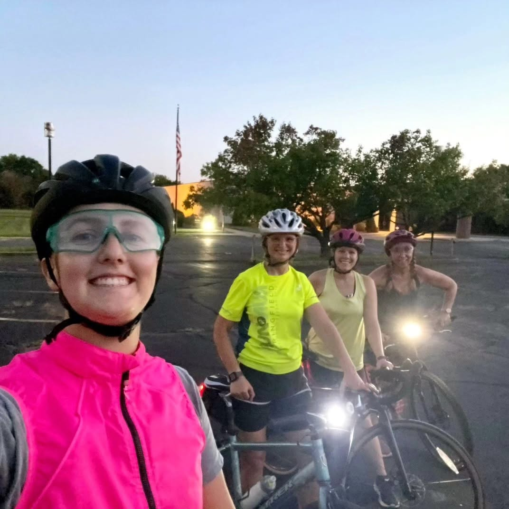
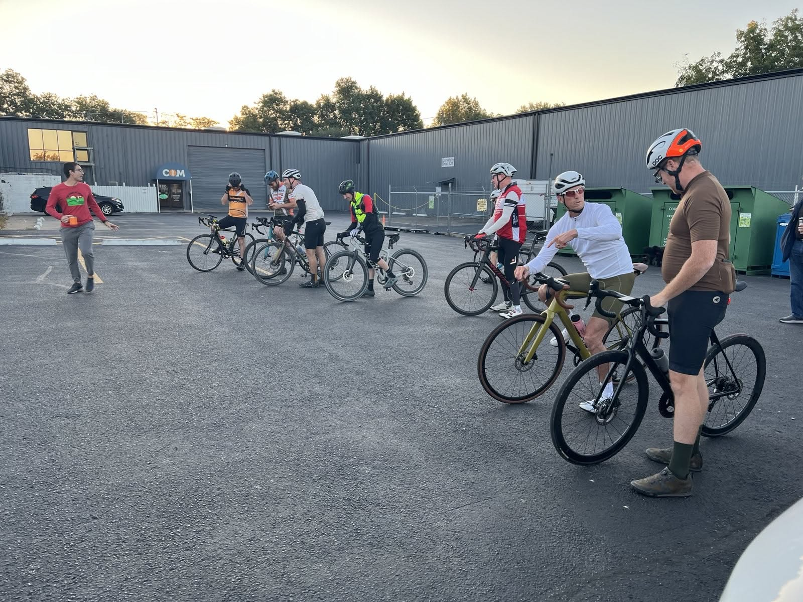

Club updates
News
Ride reports, trail days, and event teasers from around Polk County. Check back often — or follow us on Facebook for the latest ride calls.
Photos from previous events
Club rides, Country Miler starts, SAG stops, and golden-hour miles — not dated news, just memories on two wheels.







